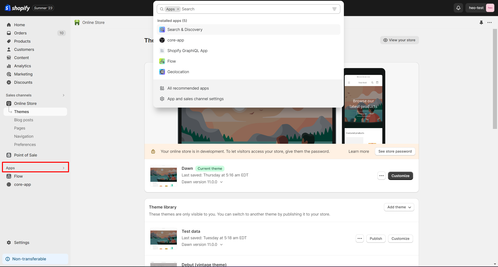
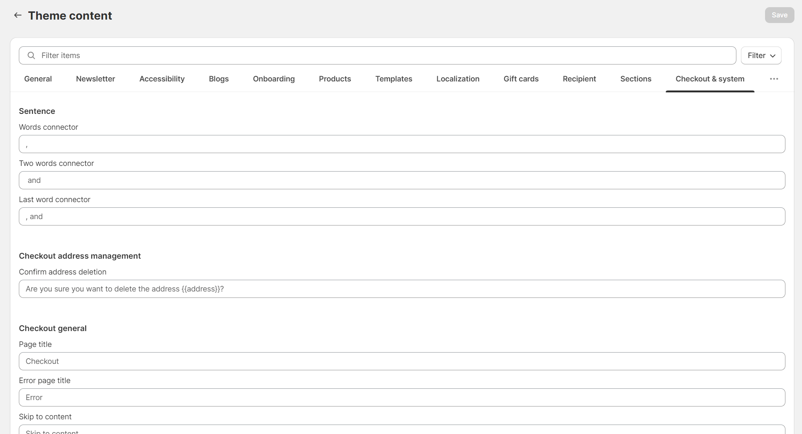
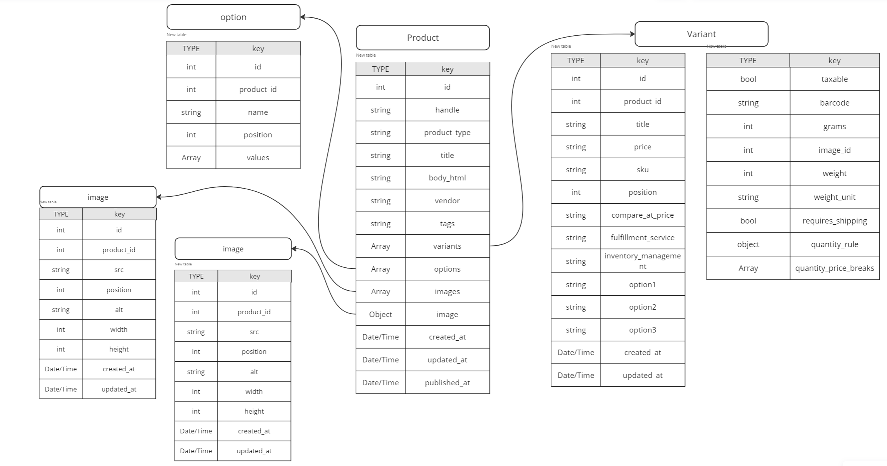

Shopify - це онлайн-платформа типу SaaS (Software as a Service), спеціалізована на створенні та розвитку електронно-комерційних проектів будь-якого масштабу, від невеликих локальних магазинів до великих міжнародних корпорацій. Ця платформа надає широкі можливості для налаштування та розширення бізнесу у сфері електронної комерції і дозволяє легко інтегрувати її з іншими сервісами.
Оскільки Shopify - це хмарна платформа (Cloud-Based App), використання її базується на системі підписок. Shopify пропонує різні типи підписок, що відповідають потребам продавців різних розмірів бізнесу. Взагалі, базовий функціонал доступний у всіх типах підписок схожий, але важливо знати, що існують два основних варіанти підписок на Shopify: "Shopify" і "Shopify Plus". Ці два варіанти відрізняються доступом до певного функціоналу та можливістю більш детального налаштування окремих процесів у магазині.
Детальніше описано у пункті Shopify vs Shopify Plus
Щодо актуальних планів та подробиць на даний момент, рекомендую переглянути офіційний сайт Shopify
Features out of the box (Basic)
Незалежно від обраного типу підписки, продавець отримує певний базовий функціонал.
Що таке базовий функціонал Shopify?
Доступ до Shopify Admin Panel - це універсальна платформа, де продавці можуть здійснювати конфігурацію всіх аспектів свого бізнесу, автоматизувати процеси, вести аналітику і керувати всіма складовими свого електронного магазину зручним способом.
Ось перелік того що базово є у всіх сторах:
- Аналітичні інструменти (Засоби для відстеження та аналізу важливих показників продажів і відвідуваності)
- SEO та маркетингові інструменти (Інструменти для покращення СЕО показників та створення маркетингових кампаній)
-
Бекенд системи для:
- Магазину (Управління товарами, кошиком, оформленням замовлень)
- Gift card (Можливість створювати Gift cards)
- Система дисконтів (Можливість налаштовувати декілька видів дисконтів за певних умов або за допомогою дисконт-коду)
- Облікова система кастомерів (Аутентифікація - особистий кабінет кліентів)
- Файлова система стору (Можливісь завантажувати файли у файлову систему магазину і використовувати їх будь де)
- Блоггінг. (Створення та публікація статей на різноманітні теми з можливістю категоризації)
- Payment processing (Можливість підключення необхідного платіжного провайдера)
- Тимплейт система (Web сторінка магазину формується завдяки тимплейт системі – Shopify Theme)
Тут перераховані базові фічі, але їх значно більше. Ви з ними ознайомитесь в наступних пунктах документу.
Shopify Stakeholders
Перед тим як розглядати подальший деталізований аналіз екосистеми Shopify, важливо звернути увагу на структуру взаємодії між розробниками та власниками магазинів.
Ми можемо розділити цю взаємодію на дві основні складові:
- Продавці - Це основні учасники, які використовують платформу Shopify для реалізації своїх бізнес-ідей та управління електронними магазинами.
- Партнери - пропонують професійні послуги продавцям та допомагають познайомити їх з Shopify. Партнери є ключовими гравцями в створенні та підвищенні ефективності електронного комерційного бізнесу для продавців. Вони мають доступ до останніх даних про стан платформи (оновлення), її можливостей та обмежень і знають, як найкраще покращити бізнес продавця за допомогою інструментів, які надає Shopify.
Існують різні види послуг, якими можуть займатися партнери:
Для кращого розуміння, це можно уявити наступним чином:
- Це будова нового або вдосконалення існуючого функціоналу на базі того що є out of the box у Shopify. За цю роботу відповідають Front End розробники або по іншому Shopify Theme developers
- Створення додатків для Shopify (Shopify App), які розширюють функціональність магазину шляхом взаємодії з API платформи. Цим займаються Back end розробники які будують окремий Web Application котрий взаємодіє з Shopify. (Для цього потрібен окремий хостінг, бекенд, БД тощо)
Shopify Admin Overview
1. Home
Це базова сторінка де відображається останні події магазину, важливі повідомлення тощо
2. Orders
Тут зібрані список всіх ордерів з їх станом (статус оплати, заповнення, підтверждення тощо) та додатковою інформацією. Всі ордери клікабельні де можно подивитись більш детальну інформацію що до них.
3. Products
В цій вкладці слід звернути увагу на три основні пункти, на які вказано стрілкою: Products, Collection і Gift Cards.
В цих пунктах проводяться всі налаштування, пов'язані з продуктовою структурою магазину і налаштуваннями подарункових карток. У Shopify подарункова карта має форму і структуру продукта, тому її налаштовують в меню продуктів.
4. Customers
У цьому пункті відображається вся інформація щодо клієнтів магазину, а саме - інформація про вже зареєстрованих користувачів.
5. Content
Цей пункт відображає метаоб’єкти та файлову систему стору.
1) Метаоб’єкти (Доволі нова фіча Shopify для зберігання кастомної інформації, більш детально описано у пункті ЗРОБИТИ)
2) File – це файлова система магазину, в яку можна завантажувати будь-який файл для подальшого використання в будь-якому місці. Також важливо враховувати, що до цієї системи потрапляють всі файли, які завантажуються для продуктів, сторінок, блогу і т.д. Наприклад, такі файли, як картинки, відео, 3D-об'єкти і т.д.
6. Analytics & Marketing
Analytics – відображає аналітику магазину. ЇЇ можно кастомізувати під потреби продавця.
Marketing – відповідає за всі аспекти маркетингу. Тут можна налаштовувати різні маркетингові кампанії, події, тригери та інші засоби просування.
7. Discounts
В цьому меню відображається вся інформація щодо знижок. Тут можна переглядати їх стан (активний, неактивний, архівний...), тип, умови та інші параметри.
Shopify базово дає декілька типів дисконтів котрі можно налаштовувати під потреби продавця. Можно налаштувати як автоматичний дісконт так і за допомогою дісконт кодів.
8. Sales channels & POS (Point of sale)
Продавці можуть реалізовувати свій товар не лише через веб-сайт, але також завдяки різним каналам продажу, інтегруючи їх з різними онлайн-платформами або створюючи пункти фізичного продажу.
Це налаштовується у відповідному меню Sales Channels - налаштування онлайн каналів продажу
та POS - налаштування фізичною точки продажу
9. Online Store
Це панель налаштування шаблонів веб-сторінок магазину. Більш детальніе у пунті Shopify Themes ЗРОБИТИ
10. Apps
Це список всіх встановлених інтеграції з Shopify Store (Shopify App), які розширюють базовий функціонал, взаємодіючи з Shopify API.
Shopify Settings Overview
Щоб перейти в налаштування магазину, відкриваємо пункт Settings
У цьому меню ми можемо переглянути навігацію з багатьма пунктами для налаштування магазину.
1. Store details: Налаштовуються базові дані про магазин (Дані про профіль власника, тайм зона тощо)
2. Plan: Відображається тип підписки магазину та payment options для оплати підписки
3. Billing: Також налаштування різних payment методів для взаємодій з Shopify
4. Users and permissions:
В данному пункті налаштовуються доступи для різних юзерів.
У Shopify є 2 типи юзерів котрі могут взаємодіяти зі стором, це Staff і Collaborator.
У чому різниця?
Staff Accounts – це для співробітників магазину, тому що він дає «адміністративний» доступ для роботи з магазином. (Users can be granted permissions that they require to log in to the shop and complete tasks like adding products or managing orders. )
Collaborators – це доступ для партнерів магазину, таких як дизайнери, розробники,менеджери. Рівень доступу цих типів юзерів контролюється власником. (Giving Shopify Partners access to the store to work on any customizations or projects.)
Тому важливо пам’ятати що для розробки нам потрібен саме цей вид доступу.
5. Payments: В цьому пункті налаштовується Payment провайдери магазина. Shopify надає доволі широкий вибір провайдерів як глобальних так і локальних.(Навіть є провайдери для оплати криптовалютою). Також за потреби можно налаштувати кастомний метод оплати (Manual payment methods)

Окрім цього треба знати що у Shopify є свій тестовий провайдер який використовується для тестування процесу оформлення ордерів у магазині. Він називається Bogus Gateway.
Більше інформаціїї можно знайти тут
6. Checkout:
Тут налаштовується:
- методи контакту з кліентами при оформленні ордера,
- налаштування базової валідації (можно вказати які інпути на чекауті повинні бути
- Маркетингові трігери та налаштування поведінки при них
- Checkout behavior
- Order Processing
- Додавання додаткових скріптив на ордер пейдж.
Це меню може мати різний вигляд в залежності від типу підписки.
7. Customer account: Налаштування різних поведінок пов’язаних з акаунтом кастомерів (url, branding…)
8. Shipping and delivery:
Важлива панель де продавець налаштовуює все що пов’язано з доставкою, наприклад такі речі як:
- Shipping methods та Shipping rates. (Можно налаштовувати різні вариінти доставки в залежності від місця знаходження кастомера)
- Налаштування Local pick up & Local delivery
Більше інформаціїї тут9. Taxes and duties:
В даному меню налаштовуються податки магазину. Тут можно обрати специфічну кількість податків для окремих країн, стратегію як буде рахуватись податки тощо. Найчастіше це заповнює кліент, так як тільки в нього є вся потрібна інформація що до податків.10. Locations:
Тут налаштовується локації магазину, а саме:- Локація за замочуванням
- Локації сторів
- Локації для доставки (тобто можно обрати специфічну локацію-стор з якого відбуваються вся доставка, наприклад по країні)
- Локація складу
Ця вся інформація корисна, коли заповнюється картка продукта, так як точніше можно налаштувати бізнес процеси.
11. Gift Cards:
Тут відбувається налаштування поведінки подарункових карт.(Наприклад налаштування автоматичного часу закінчення терміну дії gift коду)12. Markets:
В даній панелі налаштовується кількість «маркетів» які є у стора. Маркети відіграють роль «правил» для відображання контенту,домена, мови, цін, провайдерів для оплати, способів доставки і т.д.
Ось приклад маркету для Грузії:
Тут можно налаштувати всі ці параметри адаптуючі їх під грузинське законодавство, податки, ринок тощо. І покупці з Грузії будуть бачити релевантний контент до країни.
13. Apps and Sales channels: Це те ж саме що вище описано у розділи Sales channels & POS (Point of sale)
14. Domain: Підключення кастомних доменів.
15. Customer events: В даному полю підключаються скріпти для сторонніх інтеграцій (наприклад аналітики)
16. Brand:
Налаштування бренду магазина: різноманітні лого, фавікони, кольори, дескрішени для сео, слогани, соціальні лінки тощо. Все те що буде показуватись як інформація про магазин у інтеграціях та у тимплетах магазину.
17. Notifications:
Важлива панель де можно внести зміни у Email тимплейти котрі відправляє магазин до кастомерів у різних випадках.
Там добре описано в яких випадках відправляється той чи інший тимплейт, то за потреби можно підправити його структуру, додати необхідні дані, стилі, посилання і т.п.
18. Custom Data: Панель для налаштування метафілдів стору. Інформація що до цього описано в пункті Metafields & Metaobjects (ЗРОБИТИ)
19. Languages: Налаштування мов магазину
20. Policies: Налаштування правил що до Store policies
Structure & Limitations
Shopify магазини мають певну структуру:
- Адміністративна панель: центральне місце управління інтернет-магазином на платформі Shopify. Це інтерфейс, де адміністратори та власники магазину встановлюють всі налаштування, додають товари, відстежують замовлення та виконують всі інші адміністративні завдання. Тут також можна налаштовувати податки, способи доставки, акції та багато іншого.
- Web Application: Ця частина Shopify включає в себе Shopify теми (themes).
Теми - це основна складова, яка визначає візуальний вигляд та інтерфейс магазину. Теми
включають в себе дизайн, розміщення, кольори, шрифти та інші елементи, які формують
зовнішній вигляд інтернет-магазину. Редагування тем відбувається через адміністративну
панель та може бути виконане без програмування за допомогою theme customize, або з
використанням коду (HTML, CSS, та мова шаблонів Liquid) для більшої індивідуалізації.
Детальніше у пункті Theme Structure
URL structure
Shopify Themes
Будова магазинів основана на системі тем (themes). Тема – це шаблон з кодом магазину який використовується для відображення контенту. З кодом даних тем працюють Front end розробники коли реалізовують різноманітні фічі.
Які бувають теми?
Безкоштовні, платні та кастомні.
У розділі Online Store => Themes, у нижній частині сторінці можно побачити меню з безкоштовними темами та посилання на Theme Store

Безкоштовні теми це теми котрі розробила сама компанія Shopify.
На даний момент є 12 безкоштовних тем. Вони відрізняються дизайном та функціоналом котрий є у них. Найчастіше обирають тему Dawn як основу і на базі неї будують додатковий функціонал, дизайн тощо.
Чому саме ця тема?
- Мінімалістична та максимально оптимізована тема
- Побудована за методом Mobile-first
- Має доволі багато налаштувань та фіч, котрі доволі легко модернізувати під потреби кліента.
Платні теми це ті теми котрі створили інші Shopify партнери. Зазвичай в таких темах більше фіч, налаштувань та інтеграцій. У Shopify theme Store є фільтр де можно знайти теми з необхідними фічами.
Кастомні теми – це теми котрі повністью з 0 розроблюються під кліента.
Customize
Перед початком занурення у theme customizer, треба зрозуміти один концепт.
Є 2 види даних:
- Дані елементів адмін панелі. Це така інформація як дані продуктів, ордерів, сторінок, блогу тощо
- Дані налаштувань теми
Які данні зберігаються в темі?
1. Config
У файлі settings_schema заповнюються глобальні правила, значення котрих доступні на кожній сторніці магазину. Ці правила використовуються для зміни контенту, дизайну або при налаштуванні функціоналу котрий залежить від цих налаштувань.
Файл settings_data зберігає дані котрі вводяться по правилам settings_schema
2. JSON Templates
JSON тимплейти збергіють дані про секціїї які містяться в тимплейтах: їх порядок розташування та дані про налаштування секцій
3. Locales
Тут зберігаються JSON файли перекладу магазину на різні мови.
Чому це важливо?
Тому що чітке розуміння того які дані де зберігаються проекти від несподіваних казусів з втрачанням даних різних тем. Кожна зміна в кастомайзі за допомогою UI елементів змінює певні файли з даними про котрі описано вищче.
Customize Overview
При переході у вкладку Online store => theme, перше що ми бачимо це панель управління темами магазину
В меню з темами ми можемо побачити головну тему яка знаходиться в продакшені і theme library в котрих може буди певна кількість тем. Це дев теми в котрих щось тестується або щось реалізовується. Вони доступні тільки при використанні спеціальних посилань на цю тему.
Customize певної теми відкривається за допомогою відповідної кнопки
Далі відкривається сам кастомайзер.
Тут ми бачимо багато елементів навігації:
- Список секції у тимплейті.
Якщо у темі використовується JSON тимплейт є можливіть прям з цього меню додати або видалити секцію. Також можно змінити порядок відображень секцій. - Панель налаштувань обраной секції.
- Панель відображення всіх типів тимплейтів
- Панель переключаення маркетів магазину
Це потрібно тоді коли треба подивитись як буде виглядати контент для певної країни - Панель переходу до налаштувань всій теми та до налаштувань підключених сторонніх інтеграцій
з темою.
У розділі налаштувань всій темі заповнюються глобальні дані теми про котрі описано вище у розділі config
Також у кожній темі є системі файли перекладу теми.
Відкривається це меню наступним чином:
В цьому меню налаштовується переклад всіх системних даних. (Наприклад Title на чекауті або якісь системні повідомлення)
Structure
Кожна Shopify тема складається з набору файлів і каталогів, які організовані у відповідний спосіб.
Основні каталоги, які можна знайти у кожній темі, включають:
- assets: Розміщуються статичні файли, такі як зображення, стилі CSS, скрипти JavaScript і інші ресурси, які використовуються на сторінках магазину.
- config: Розміщуються конфігураційні файли, які визначають параметри теми, такі як кольори, шрифти, налаштування меню та інше.
- layout: Розміщуються основні кореневі файли магазину в які "вмонтовуються" інші тимплейти.
- templates: Тут знаходяться тимплейти для конкретних елементів, такі як шаблон для відображення продуктів, колекцій, статтей блогу тощо.
- sections: В цьому каталозі розміщуються секції, які можна додавати на сторінки магазину. Кожна секція відповідає за певний блок інформації на сторінці, наприклад, банер, блок товарів, форма зворотнього зв'язку і інші.
- snippets: Розміщуються невелички частини коду котрі перевикористовуються в різних секціях.
- locales: Розміщуються файли перекладів, які дозволяють локалізувати тему на різні мови.
Тема побудована у стеку:
- Liquid - це мова шаблонів із відкритим кодом, створена Shopify і написана на Ruby. Це основа тем Shopify і використовується для завантаження динамічного вмісту.
- CSS - стилізування
- JavaScript - динамічність
- JSON – для зберігання налаштувань та інформаціїї тимплейтів.
Як це все працює можно уявити на наступному прикладі.Тут схематично представлене відображення продуктової сторінки магазину.
Для чіткого розуміння нюансів розробки більш детальніше розглянемо templates та sections
Templates
Є два види тимплейтів- Liquid
- JSON
У чому різниця і чому це важливо?
З початку появи платформи Shopify були liquid тимплейти. Вони використовувались як шаблони для відображення контенту для різних типів сторінок.
Вони працюють наступним чином:
Коли на сторінці продукту обирається даний тип тимплейта, при переході на цю сторінку починає вдображатись тимплейт котрий був створений за допомогою html розмітки. Де власноруч робиться посилання на потрібну секцію і де є доступ до інформації продукта.
У 2021 році Shopify додали новий тип тимплейтів JSON (Ще можно зустріти таку назву як Shopify Online Store 2.0). Він відрізнявся тим що всі тимплейти стали JSON інформацією про те які секції є у тимплеті
Це пришвидшило завантаження сторінок, а також надало можливість редагувати секції у тимплейтах без втручання у код тимплейту, а тільки за допомогою Theme Customize.(Детальніше в пункті Customize)
Sections
Sections - це індивідуальні блоки коду (зазвичай їх роблять максимально автономними) котрі використовуються у різних тимплейтах для відображення певного UI блоку (можно використовувати декілька раз на одному тимплейті)
Дані секції створюються певним способом:
Те що виділене червоним це сам контент секції (HTML розмітка, стилі, JS), а те що виділено синім це налаштуваняя (Schema) по правилам которої можно налаштовувати контент через кастомайз (без втручання в код, а тільки завдяки UI панелі - те що виділенно синім на першому слайді розділу sections)
Також добре знати що таке Snippets:
Це окрема частина коду котра може перевикористовуватись у секціяї або в Liquid темплейтах. Всередині сніпета є доступ тільки до той інформації котру передали її з батьківського файлу.
Щоб краще зрозуміти різницю, можно взяти на типовому прикладі продуктової картки:
Shopify entities
Для того щоб зрозуміти як і що можно реалізовувати за допомогою Shopify можно використовувати таблиці суттностей:
- Product - Variant
- Order - Cart - Line items(Cart items)
- Collection
- Blogs - Blog - Articles - Article
- Customer
- Page
- Shop - Routes - Link list(navigation)
Тут перераховані основні об'єкти, якщо хочете дізнатись більше, можете використовувати ці 2 ресурси:
- Shopify Cheat Sheet (в меню зліва оберить фільтрацію по об'ектах)
- Shopify Liquid Object Docs
Small tip: В останьому посиланні дуже зручно можно дізнатись звідки є доступ до цього об'єкта та які об'єкти можуть бути доступні з нього.
Products
Схематичне зображення об'єкта Product
Робота з продуктами в адмінці
Для прикладу створимо новий продукт та розберемо всі пункти що є в цій панелі.
1. Налаштування title & description. Ці дані за замовчуванням відображаються на сторінці продукта та заносяться як мета дані для SEO (якщо не налаштована додатково SEO розмітка)
2. Меню налаштування статуса продукта (Draft/Active). Коли продукт в статусі Draft він не відображається на сторінка магазину та його неможливо купити через інші Sales channels
3. Налаштування реалзації товару: Канали продажу та маркети.
При необхідності можно зробити щоб товар продавався тільки у спеціфічному маркеті або тільки
через стороні сервісі
4.
- Product Category Вибір категорії товару з наданного списку. Це налаштування допомогає в інтеграції з іншими Sales channel для більш точної реклами товару.Наприклад ці категорі співпадають з категоріями Facebook (Meta) то при налаштуванні цього пункта таргетінг товару через данну платформу буде більш точніший
- Product type & Vendor & Tags Кастомні дані котрі можно використовувати для будь яких задач. Наприклад для фільтрації, стилізування, додаткогого функціоналу тощо.
- Collections Додавання продукту до колекцій. Більш детально про колекції у розділі Collections
5. Тут обирається тимплейт за допомогою якого буде відображатись цей продукт
6. Сюди додається медіа файли: зображення, відео, 3д об'екти які закріплюються за продуктом. Перше зображеня котре стоїть в даному меню набуває статусу product featured image (головне зображення продукту).
7. В цій панелі налаштовується все що зв'язано з ціноутоворенням: ціна або ціні для міжкраїних магазинів, податки, акційна ціна тощо
8. Налаштування складу: кількісь продукта, локація де в наявності, SKU, Barcode тощо
9. Налаштування умов доставки
10. Налаштування варіативності продуктів. У Shopify є певні обмеження (на даний момент) в цьому
плані
що у продукта може бути тільки 3 option та до 100 варіантів продукта.
Приведу приклад
- Color (option)
- variant #1
- variant #2
- variant #3
- Size (option)
- variant #1
- variant #2
- variant #3
- Material (option)
- variant #1
- variant #2
- variant #3
11. Налаштування SEO даних та налаштування URL handle
12. Налаштування Product Metafields
Orders
Схематичне зображення об'єкта Order
Pages
Щоб додати нову сторінку треба перейти в розділ Pages
Та зверху нажати Add Page
Після чого відкривається меню створення сторінки де треба обрати тимплейт для даної сторінки
(серед тих тимплейтів котрі стоверні в темі для сторінок типу Page).
Також треба мати на увазі що коли вводиться Title для сторінки він автоматично
перетворюється на хендл сторінки. Якщо потрібно зробити кастомний хендл то потрібно нажати SEO
edit і налаштувати потрібний хендл.
Blog
У Shopify є система блогінгу out of the box.
Структура вигладяє наступним чином:
Є блог котрий може розділятись на основні категорії
У кожного блогу є своя сторінка лістінгу статтей. Для кожній статті обирається автор та є
можливість додати кастомні теги, завдяки котрим можно наприклад зробити зручну фільтрацію.
(На одній статті можуть бути декілька тегів)
Також є можливість додавати інпут для коментарів до статтей з можливістью налаштування правил
показу
Всі налаштування статтей та блогу робляться у цьому розділі
Navigation
Навігація це об'ект котрий створюється у адміністративної панелі магазину. Вона не зберігається у темі, тому її можно використовувати в декількох темах одночасно.
Всі доступні об'екти навігаціїї можно знайти у відповідному розділі
В кожній навігації за допомогою UI функціоналу налаштовується потрібна кількість посилань.
Також треба пам'ятати що ця навігація підтримує тільки 3 рівні вкладеності елементів (показав на
прикладі)
В темах цю навігацію назначають у відповідне налаштування секцій щоб відобразити ту структуру що створено у адмінці. (нижче приклад навігації у header)
Predictive Search & Filters & Product recommendation
У Shopify out of the box є доволі гнучки налаштування таких фіч як Predictive Search & Filters &
Product recommendation.
Щоб перейти в меню налаштування цього функціоналу треба перейти в Shopify'євську апку
Після відкриття апки, можно побачити декілько пунктів налаштувань
Перший з них це фільтрація. Тут налаштовується як буде відображатись фільтрація
на сторінки колекцій та які категорії там будуть. Також є можливість додати кастомну фільтрацію
за допомого shopify метафілдів.
Далі іде налаштування Predictive Search. В цій панелі можно налаштувати які продукти будуть показуватись першими за всіх при пошуку або також можно зробити синонімічний ряд слів для успішного пошуку покупцями товару (наприклад при пошуку якоїсь абревіатури щоб показувався певний товар)
Recommendations
В цьому меню можно більш точно налаштувати Шопіфаевську фічу для рекомендації продуктів. По замовчуванню рекомендаційний товар генерується за допомогою внутрішнього алгоритму Shopify, але за допомогою цих налаштувань є можливість зробити кастомні рекомендації для певного продукту
Redirects
Якщо потрібно зробити кастомні редіректи, це можно зробити за допомгою наступногої панелі
Тут можно додавати як по одному редіректу так і імпортувати за допомогою CSV файлу, за певним шаблоном (шаблон можно знайти при кліку на кнопку import url redirects)